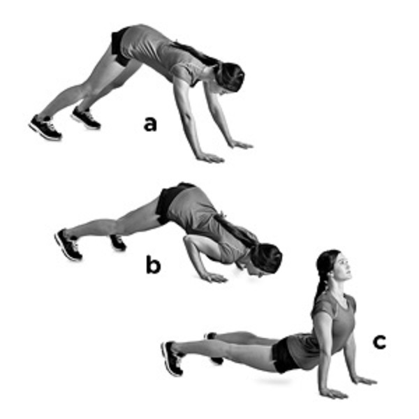

THE SQUAT
The squat is the most basic of exercises. It targets your quads, glutes, calves and hamstrings. It is an complete leg exercise.
To perform an squat:
- Stand with your feet shoulder width apart.
- Then raise your arms out in front of you and bend your knees going into a sitting posture.
- Lower yourself until your thighs are parallel to the floor and then raise back up. This completes one SQUAT.
- Remember to squeese your core and buttocks through the movement.
- Exhale as you go down and inhale back up.
THE LUNGE
The lunge an supplement to squat. It improves walking stability and targets the back of leg. To perform an lunge follow these basic steps:
- Stand with your feet shoulder width apart.
- Inhale, lift and extend your right or left leg in front of respective limb and lower yourself through the center.
- Exhale as you return to the starting position and repeat with the other leg.
- When you've completed on both legs, you've performed one LUNGE.
- Remember to maintain your balance.
THE DIVEBOMBER

Also commonlly referred to as the 'The Hindu pushup'; divebomber is a complete upper body exercise targeting shoulder, chest and upper back muscles.
To execute them correctly, follow these simple steps:
- Lay down on the ground on all four limbs whle maintaining an shoulder width distance between hands and feets.
- Extend your legs and get into an plank position. Inhale while pushing your hips up forming an triangle.
- Exhale as you go down from this position forward while lifting your head up forming a C with your back.
- Return to plank and repeat, this movement completes one DIVEBOMBER.